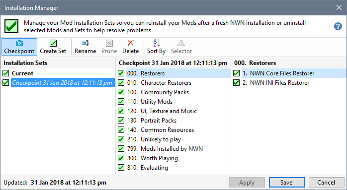

A Checkpoint is an Installation Set defining all the Mods that were installed at the time it was created. Unlike Mod Installation Sets, you cannot add additional Groups to the Set after it has been created. Checkpoints are useful for creating snapshots of your currently installed Mods.
You might want to create a Checkpoint before you reinstall Neverwinter Nights so that you can restore your installed Mods after the new installation has been performed.

Create Checkpoints